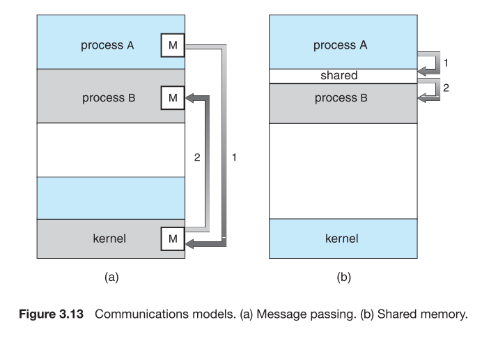

Interprocess Communication
Processes executing concurrently in the OS may be either independent processes or cooperating processes.
There are several reasons for providing an environment that allows process cooperation:
- Information sharing:
許多使用者可能需要用到同一個file的資訊，所以OS必須提供同時access的環境。
- Computation speedup:
如果希望某個task可以執行快一點，可以將task分割成許多子task，再executing in parallel。
注意: 只有在機器提供multiple processing的環境才能達成。(such as CPUs or I/O channels).
- Modularity:
- Convenience:
Even an individual user_ay work on many tasks at same time. For instance, a user may be editing, printing, and compiling in parallel.
Cooperating processes require an interprocess communication(IPC) mechanism that will allow them to exchange data and information.
Two models of interprocess communication
There are two fundamental models of interprocess communication:
- Shared memory
- message passing
